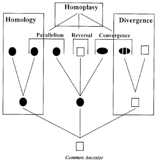
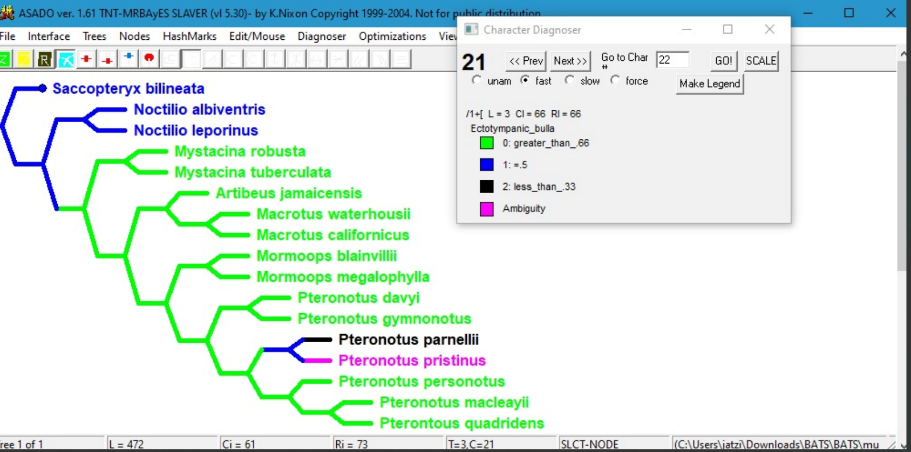
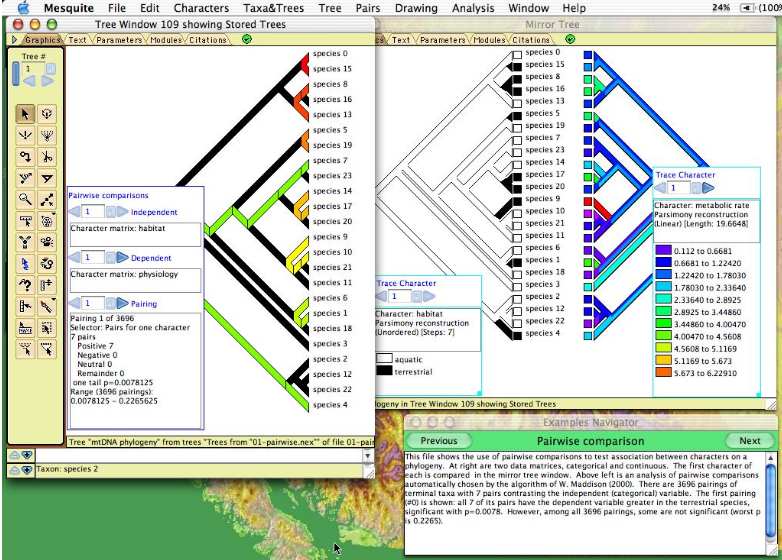
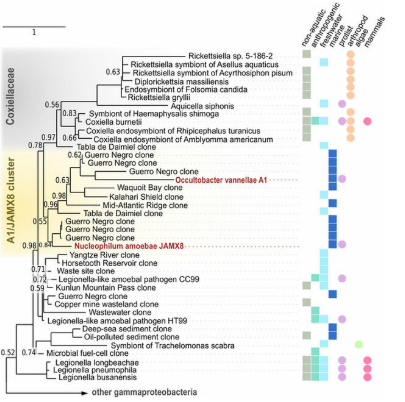
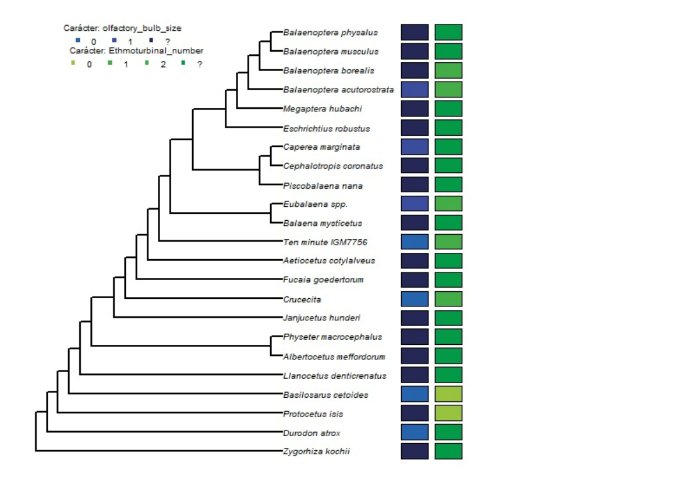

🔬 Contexto: Análisis Filogenético Morfológico
El estudio de la evolución morfológica a menudo requiere la reconstrucción y el mapeo de estados de carácter sobre una filogenia para entender la historia evolutiva de los rasgos morfológicos discretos.
¿Para qué sirve el mapeo de caracteres?
El mapeo filogenético nos permite:
- Distinguir convergencias evolutivas: Identificar cuando la misma condición aparece independientemente en linajes diferentes (homoplasias)
- Identificar sinapomorfías: Reconocer caracteres que aparecen en el ancestro y son heredados a todos los descendientes (homologías)
- Rastrear la evolución de rasgos: Visualizar cómo cambian las características morfológicas a lo largo del tiempo evolutivo
- Analizar patrones evolutivos: Detectar paralelismos, reversiones y tendencias direccionales

Figura 7: Usos del mapeo de caracteres
Principio fundamental: El mapeo de caracteres sobre filogenias utiliza el principio de máxima parsimonia, minimizando el número de cambios evolutivos necesarios para explicar la distribución observada de rasgos morfológicos.
💻 Panorama Actual del Software
Herramientas Disponibles
Actualmente existen diversas herramientas que permiten el mapeo y la reconstrucción de estados ancestrales usando parsimonia:
-
Mesquite
Permite mapear dos caracteres, pero requiere contrastar dos filogenias separadas
-
WinClada
Software tradicional limitado a visualización de un carácter por análisis
-
TNT (Tree Analysis Using New Technology)
Potente para análisis cladístico pero con visualización limitada de estados múltiples
-
Paquetes de R (phangorn, TreeSearch)
Flexibles pero requieren programación avanzada y conocimiento profundo de R

Figura 8: Software tradicional mostrando mapeo limitado a un único carácter por visualización

Figura 9: Multimapeo en Mesquite (contraste de filogenias mapeadas)

Figura 10: Multimapeo con programa, poco personalizable
⚠️ La Limitación Principal
Los programas actuales sólo permiten mapear un único carácter a la vez
Esta restricción fundamental dificulta la visualización y el análisis comparativo en investigaciones modernas
Preguntas Sin Respuesta en el Software Actual
-
¿Qué pasa si quiero mapear más de un carácter de manera simultánea?
Los programas tradicionales no ofrecen esta funcionalidad integrada
-
¿Qué pasa si quiero representar una filogenia con estilo de abanico (fan)?
Opciones de visualización limitadas en la mayoría del software
-
¿Qué pasa si quiero personalizar los colores de los estados?
Paletas de colores predefinidas sin opciones de customización
-
¿Cómo puedo hacer esto sin ser experto en programación?
Las soluciones en R requieren conocimiento avanzado de programación y manejo de datos filogenéticos
Consecuencias de estas Limitaciones
⏱️ Pérdida de Tiempo
Necesidad de generar múltiples visualizaciones separadas para comparar caracteres
🔍 Análisis Fragmentado
Dificultad para detectar patrones complejos que requieren visualización simultánea
📊 Presentación Limitada
Complicaciones para comunicar resultados de manera efectiva en publicaciones
💻 Barrera Técnica
Exclusión de investigadores sin formación avanzada en programación
✨ Nuestra Solución: MultiMapR
Nuestro Objetivo
Crear una herramienta de software interactiva y amigable con el usuario final, diseñada para mapear, reconstruir y visualizar múltiples caracteres morfológicos discretos de manera simultánea, todo basado en el principio de máxima parsimonia.

Figura 3: MultiMapR permite la visualización simultánea de múltiples caracteres con total flexibilidad en personalización y estilos de representación
¿Qué hace diferente a MultiMapR?
Visualización simultánea de todos los caracteres que necesites
Sin necesidad de conocimientos avanzados de programación
Colores, estilos de árbol (abanico, rectangular, circular) y más
Implementación del algoritmo de Fitch con ACCTRAN/DELTRAN
Librería de R accesible para toda la comunidad científica
Visualización y reconstrucción en un solo flujo de trabajo
Impacto en la Investigación
MultiMapR transforma la manera en que los paleontólogos y biólogos evolutivos pueden:
- Identificar convergencias: Detectar patrones de evolución paralela con mayor facilidad
- Analizar complejos de caracteres: Estudiar la evolución coordinada de múltiples rasgos
- Comunicar resultados: Generar figuras de publicación de alta calidad
- Democratizar el análisis: Hacer accesible el análisis filogenético avanzado a más investigadores
- Acelerar la investigación: Reducir el tiempo necesario para análisis comparativos complejos
🚀 Estado del Proyecto
Progreso Actual
El software está en pruebas finales con usuarios reales
Creación de manuales y tutoriales para usuarios
Lanzamiento previsto como paquete oficial de R